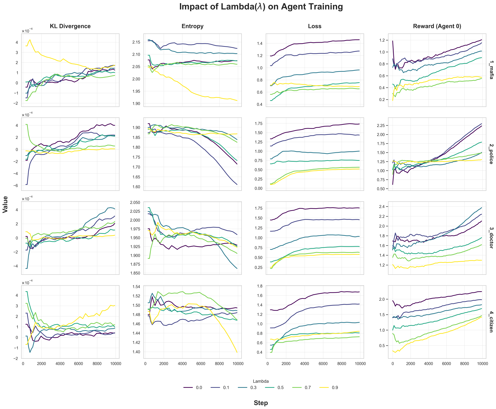
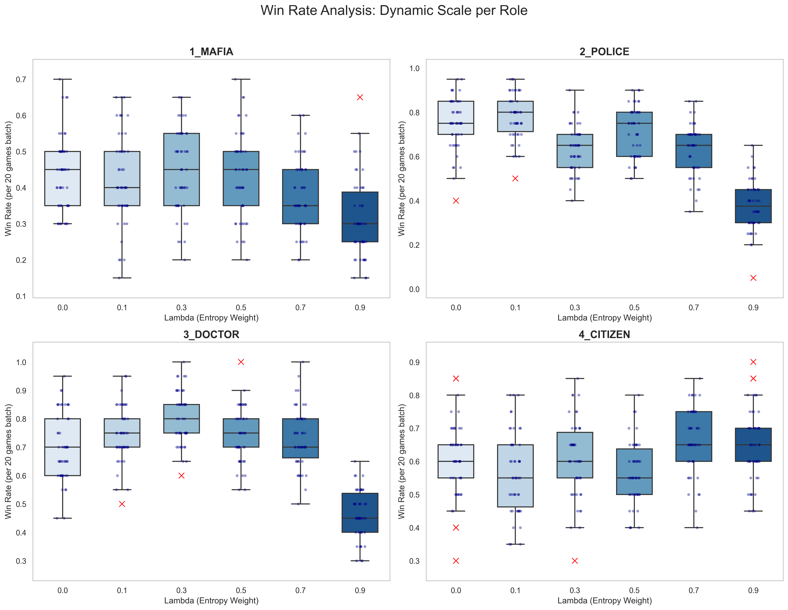
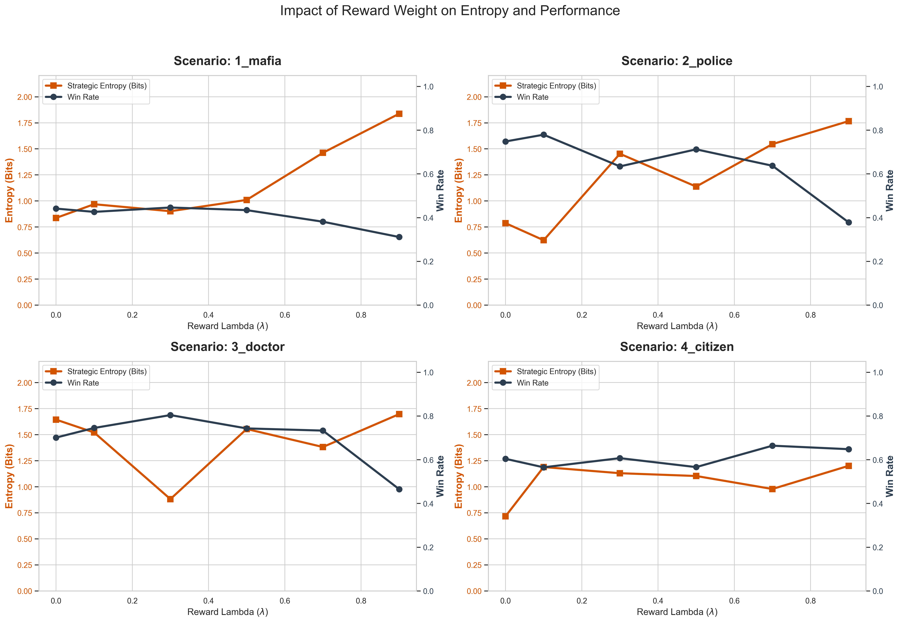

School of AI, Computer and Electrical Engineering · Handong Global University
We study how the individual reward weight λ affects policy stability across roles in a POMDP Mafia game. Optimal λ differs by role — Mafia needs λ=0, while Doctor benefits from λ=0.3. Excessive λ universally degrades performance.
Combining team rewards with auxiliary individual rewards is a common design choice in reinforcement learning, yet overly weighting individual rewards can misalign agents from team objectives. We conduct a systematic case study in a simplified Mafia game POMDP environment, varying the team-individual reward combination weight λ across {0.0, 0.1, 0.3, 0.5, 0.7, 0.9} and training independent PPO agents per role.
Results show that the effect of auxiliary rewards is role-dependent: Police and Doctor benefit from moderate λ, while Mafia's team-aligned objectives are actively harmed by individual rewards. Across all roles, excessive λ causes learning failure or team-misaligned convergence. Our findings highlight auxiliary reward ratio and role-specific suitability as critical design variables in team-individual reward structures.
Each role has a distinct optimal λ, reflecting the alignment between individual reward signals and team objectives.
Agents are trained independently per role using PPO-Clip with an MLP backbone [287→128→128]. The target role's slots are filled with PPO agents; all other roles use rule-based agents.
The 287-dimensional observation vector encodes: self ID one-hot (8), role one-hot (4), day (1), phase one-hot (4), last event (30), cumulative action matrices 8×8×3 (192), cumulative role claim matrix 8×5 (40), and alive status (8).



| Role | F-value | p-value | Interpretation |
|---|---|---|---|
| Mafia | 10.02 | < 0.001 | Moderate sensitivity to λ |
| Police | 139.96 | < 0.001 | Highest sensitivity — sharp optimal λ |
| Doctor | 73.97 | < 0.001 | High sensitivity |
| Citizen | 7.00 | < 0.001 | Lowest sensitivity |
All roles show statistically significant differences across λ values (p < 0.001).